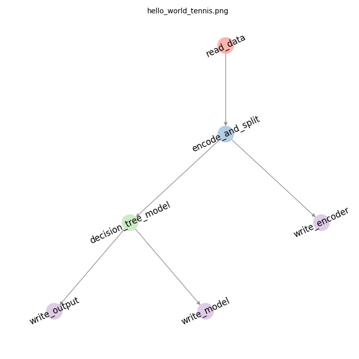

Overview¶


Primrose at a glance¶
Primrose is a simple Python framework for executing in-memory workflows defined by directed acyclic graphs (DAGs) via configuration files. Data in primrose flows from one node to another while avoiding serialization, except for when explicitly specified by the user. Primrose nodes are designed for simple batch-based machine learning workflows, which have datasets small enough to fit into a single machine’s memory.
Table of Contents¶
We suggest reading the documentation in the following order:
Overview and motivation for
primrose—this file.Getting Started: run your first
primrosejobs.DAG Configurations:
primroseadopts a configuration-as-code paradigm. This section introducesprimroseconfiguration files.Metadata: this covers more advanced options of the configuration files.
Command Line Interface (CLI): run commands using the CLI.
Developer Notes: how to create your own new Node classes.
DataObject: a deep dive into
DataObject, the core data handling and book-keeping object.
Introduction¶
Primrose is a Python framework for quick, simple machine learning and recommender deployments developed by the data science team at WW. It is essentially a workflow management tool which is specialized for the needs of machine learning tasks with small to medium sized datasets (≤ 100GB). Like many orchestration tools, Primrose nodes are defined in a directed-acyclic-graph which defines dependencies and control flow.
Here’s an example DAG showing data cleaning, model training, and model serialization:

It exists within an ecosystem of other great open source workflow management tools (like Airflow, Luigi, Kubeflow or Prefect) while carving it’s own niche based on the following design goals:
Avoid unnecessary serialization:
Primrosekeeps data in-memory between task steps, and only performs (de)serialization operations when explicitly requested by the user. Data is transported between nodes through use of aDataObjectabstraction, which contextually delivers the correct data to eachPrimrosenode at runtime. As a consequence of this design choice,Primroseruns on a single machine and can be deployed as a job within a single container, like any other Python script or cron job. In addition to operating on persistent data passed between nodes,Primrosecan also be used to call external services in a manner similar to a Luigi job. In this way, Spark jobs or Hadoop scripts can be called and the framework simply dictates dependencies.As a comparison… many solutions in this space are focused on long-running jobs which may be distributed across several computing nodes. Furthermore, to facilitate parallelization, save states for redundancy, and process datasets which are too large for memory, orchestrators often require that data is serialized between each workflow task. For smaller datasets, the IO time associated with these steps can be much longer than the time spent in computation.
Primrose is not… a solution which scales across clusters or a complex dependency management solution with dynamic DAGs (yet).
Batch processesing for ML:
Primrosewas built to facilitate frequent batches of model training or predictions that must read and write from/to multiple sources. Rather than requiring users to define their DAG structure in Python code,Primroseadopts aconfiguration-as-codeapproach.Primroseusers create implementations of node objects once, then any DAG structural modifications or parameterization changes are processed through configuration json files. This way, deployment changes to DAG operations (such as modifying a DAG to serve model predictions instead of training) can be handled purely through configuration files. This avoids the need to build new Python scripts for production modifications. Furthermore,Primrosenodes are based on common machine learning tasks to make data scientist’s lives easier. This cuts down on development time for building new models and maximizes code re-use among projects and teams. See the modeling examples in the source and documentation for more info!As a comparison… in
Primrose, users simply need to specify in their configuration file that they want common ML operations to act on theDataObject. These ML operations can certainly be implemented by users in Luigi or Airflow, but we found operations such as test-train splits or classifier cross-validation to be so common that they warranted nodes pre-dedicated to these operations. Prefect has made some great strides in this area, and we encourage users to check their solution out.Primrose is not… an auto-ml tool or machine-learning toolkit which implements its own algorithms. Any Python machine learning library can be used with
Primrose, simply by building model or pipeline nodes that implement the user’s choice of library.
Simplicity:
Standardization of deployments:
Primroseis meant to help make deployment and model building as simple as possible. From a developer operations perspective, it requires no external scheduler or cluster to run deployments.Primrosecode can simply be containerized with aprimrosePython entrypoint, and deployed as a job on a k8s or any other container management service.Standardization of development: From a software engineering perspective, another advantage of
Primrosestems form the standardization of model and recommender code. Modifying feature engineering pipelines or adding recommender features is simplified by writing additions to self-containedPrimrosenodes and making additions to a configuration file.As a comparison…
Primrosecan be leveraged as a piece of a larger ETL job (aPrimrosejob could be a job within an Airflow DAG), or run on it’s own as a self-contained, single node ETL job. Some orchestration solutions (Airflow, for example) require running persistent clusters and services for managing jobs.Primrose is not… able to manage its own job scheduling or timing. This is left to user using k8s job scheduling or manual cron job assignments on a virtual machine.
There are many solutions in this space, and we encourage users to explore other options that may be most appropriate for their workflows. We view Primrose as a simple solution for managing production ML jobs.
Getting Started¶
Primrose has a couple of optional tools:
a PostgreSQL database reader
a plotting tool
an R-dataset reader. E.g., to read in R’s iris dataset see config/example_read_r.json
These require a few external dependencies, prior to its installation. If interested in their functionality, follow the appropriate instructions for your OS below. Otherwise, you can proceed with the basic package installation.
Installation¶
You can install the latest Primrose release via pypi
pip install primrose
or you can clone the repository and install via setup.py.
git clone https://github.com/ww-tech/primrose.git
cd primrose
python setup.py install
To install the complete Primrose package (after dependencies have been installed):
pip install primrose[postgres, plotting]
To install Primrose with just the PostgreSQL option:
pip install primrose[postgres]
To install primrose with just the plotting option:
pip install primrose[plotting]
To install primrose with just the R dataset reading option:
pip install primrose[R]
External dependenices¶
PostgreSQL
MacOSX¶
We recommend using homebrew to manage OS level external packages. If you do not already have homebrew installed, please visit their website.
Instructions:
Use homebrew to install
postgresqllibrary.brew install postgresql
Use
pipto installpsycopg2pip install psycopg2
MacOSX¶
We recommend using homebrew to manage OS level external packages. If you do not already have homebrew installed, please visit their website.
Instructions:
Use homebrew to install
graphvizlibrary.brew install graphviz
If you are using a virtual environment such as
Anacondaorvirtualenv, you may need to specify a backend formatplotlib.mkdir -p ~/.matplotlib && touch ~/.matplotlib/matplotlibrc echo backend: TkAgg >> ~/.matplotlib/matplotlibrc
Debian/Ubuntu¶
Instructions:
Install
graphvizlibrary.apt-get install graphviz
If you are using a virtual environment such as
Anacondaorvirtualenv, you may need to specify a backend formatplotlib.mkdir -p ~/.config/matplotlib && touch ~/.config/matplotlib/matplotlibrc echo backend: Agg >> ~/.config/matplotlib/matplotlibrc
Next¶
You are now ready to run your first primrose jobs: Getting Started.
License¶
Copyright 2019 WW International, Inc.
Licensed under the Apache License, Version 2.0 (the “License”); you may not use this file except in compliance with the License. You may obtain a copy of the License at
http://www.apache.org/licenses/LICENSE-2.0
Unless required by applicable law or agreed to in writing, software distributed under the License is distributed on an “AS IS” BASIS, WITHOUT WARRANTIES OR CONDITIONS OF ANY KIND, either express or implied. See the License for the specific language governing permissions and limitations under the License.
Contributing¶
To contribute, start a feature branch and install black in your dev environment.
pip install black
Black is our python formatter of choice. We have also set up pre-commit hooks to enforce this formatting. This means you will get a commit error when you try to commit without adhering to our black formatting. Check out these packages for further instructions on their usage.
Once you have made your commits, make a PR to master! We have dedicated time to review open PRs at least once per week, so we shouldn’t miss any new PRs.
Please adhere to coding best practices and make sure to do everything in the PR template checklist.
Write small, modular, reusable, and testable code where possible.
Write tests (pytest or unittest) for that code and make sure it passes (pytest).
Squash your commits so that commits are fewer but more meaningful.
Update our documentation. That means adhering to our docstring format and adding markdown when necessary.